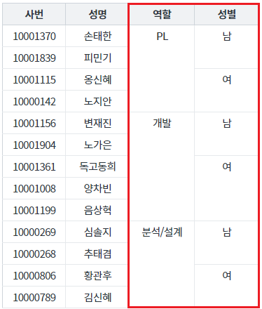
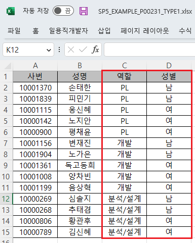
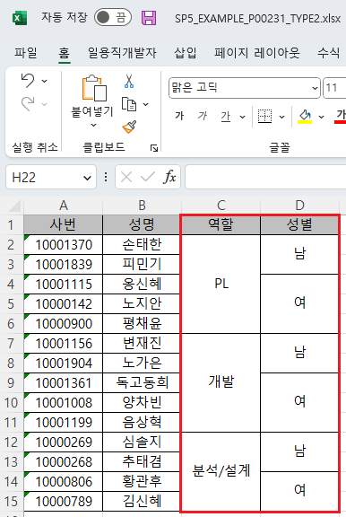
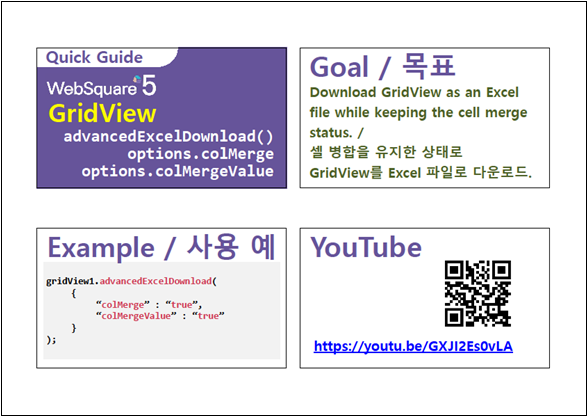

GridView의 엑셀 다운로드(함수 'advancedExcelDownload') 시 셀 병합이 적용된 상태를 유지하는 예제입니다. 다운로드 옵션 'colMerge', 'colMergeValue'을 'true'로 지정하여 구현할 수 있습니다.
다음은 옵션에 대한 설명입니다. - colMerge : [default: false, true] colMerge된 컬럼을 Merge해서 출력 할 지 여부 - colMergeValue : [default: false, true] colMerge된 컬럼을 다운로드한 Excel 파일에서 병합을 취소할 경우 모든 셀에 데이터를 채우는 기능.
엑셀 다운로드 - 기본 동작
엑셀 다운로드 - 병합된 상태 적용
GridView의 컬럼 '역할', '성별'에 병합 기능이 적용되어 있습니다.
[브라우저(Chrome) 실행 예시]

엑셀 파일 "SP5_EXAMPLE_P00231_TYPE1.xlsx"이 다운로드 됩니다.
다운로드 된 엑셀 파일 'SP5_EXAMPLE_P00231_TYPE1.xlsx'을 실행합니다.
병합이 적용되지 않고 엑셀 파일이 생성되었습니다.
[다운로드된 엑셀(2021) 파일 예시]

GridView의 컬럼 '역할', '성별'에 병합 기능이 적용되어 있습니다.
[브라우저(Chrome) 실행 예시]
엑셀 파일 'SP5_EXAMPLE_P00231_TYPE2.xlsx'이 다운로드 됩니다.
다운로드 된 엑셀 파일 'SP5_EXAMPLE_P00231_TYPE2.xlsx'을 실행합니다.
병합이 적용되지 않고 엑셀 파일이 생성되었습니다.
[다운로드된 엑셀(2021) 파일 예시]

[소스 코드 예시]
//예제 파일의 스크립트 "scwin.btn_ex2_onclick"를 참고하세요. var jsnOptions; jsnOptions = { fileName: "SP5_EXAMPLE_P00231_TYPE2.xlsx", //엑셀의 파일명 colMerge: "true", //colMerge된 컬럼을 병합 출력 colMergeValue: "true" //Excel에서 병합을 취소할 경우 셀에 데이터를 채움 }; //colMerge : [default: false, true] colMerge된 컬럼을 Merge해서 출력할 지 여부 //colMergeValue : [default: false, true] colMerge된 컬럼을 Excel에서 병합을 취소할 경우 모든 셀에 데이터를 채우는 기능. (true : 병합 해제된 모든 셀에 데이터를 채움, false : 첫 행이나 첫 열에만 데이터가 표시) //GridView "grd_exam1"의 엑셀 다운로드 실행 grd_exam1.advancedExcelDownload(jsnOptions);
options.colMerge
options.colMergeValue
[웹스퀘어5 SP5 개발 가이드] GridView
링크 : https://docs1.inswave.com/sp5_user_guide/bc10c1b82c9a2a0b#e1c4658baf7e726f
[웹스퀘어5 SP5 개발 가이드] GridView → Excel 다운로드
링크 : https://docs1.inswave.com/sp5_user_guide/bc10c1b82c9a2a0b#9fb910628c27d550
[웹스퀘어5 SP5 개발 가이드] 셀 병합을 유지한 상태로 다운로드
링크 : https://docs1.inswave.com/sp5_user_guide/bc10c1b82c9a2a0b#a02f13a7e6614379
GridView 셀 병합을 유지한 상태로 다운로드
링크 : https://youtu.be/GXJI2Es0vLA
